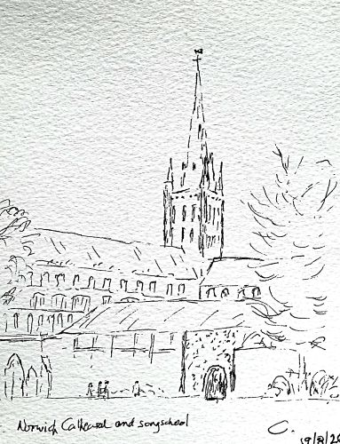

| 17/8/26 | Responses | Clucas | CCC |
| - | Mag&Nunc | Brewer in D | CCC |
| - | Anthem | Cecillia McDonnell: God be with us on this day | CCC |
| 18/8/26 | Responses | Clucas | CCC |
| - | Mag&Numc | Briggs: Gloucester Service, Tye | CCC |
| - | Anthem | Arvo Part: The deer's cry | CCC |
| 19/8/26 | Responses | Clucas | CCC |
| - | Mag&Nunc | Noble in Am | CCC |
| - | Anthem | Elgar: I saw the Lord | CCC |
| 21/8/26 | Responses | Clucas | CCC |
| - | Mag&Nunc | Andrew Lumsden: Plainsong tones | CCC |
| - | Anthem | Byrd: Sing joyfully | CCC |
| 22/8/24 | Responses | Clucas | CCC |
| - | Mag&Nunc | Coleridge in F | CCC |
| - | Anthem | Parry: My soul, there is a country | CCC |
| 23/8/26 | Mass | Langlais | CCC |
| - | Motet | Messian: O sacrum convivium | CCC |
| 23/8/26 | Responses | Clucas | CCC |
| - | Mag&Nunc | Stanford in C | CCC |
| - | Anthem | James MacMillan: A new song | CCC |
Conductors/organists: Alex Berry, Chris Pilgrim and Benji Gronlie
Sopranos: Patricia Bandle, Catherine Berry, Laura Bianchini, Shelagh Carter, Megan Vrocker, Sue Dormer, Mary Evans, Alison Moss, Karen Sheldon, Rachel Slade, Miranda Whiteley
Altos: Alison Brown, Katy Gould, Elizabeth Hargrave, Emily Oxtoby, Brenda Sims, Ellen Scarewitz, Mo Windsor
Tenors: Katie Barnes, Cris Beaumont, Martin Casey, Ian Hargrave, Iain McLean, Gavin Stark. Stephen Watson
Bass: David Clover, Will Evans, Peter Evans, Benji Gronlie, Peter Hall, Duncan Moss, Martin Shakespeare, David Turner, Gareth Williams, Colin Windsor
We stayed at the University Lodging Barton House
Copyright 2026 Colin Windsor : Last updated 24/8/26 /2024